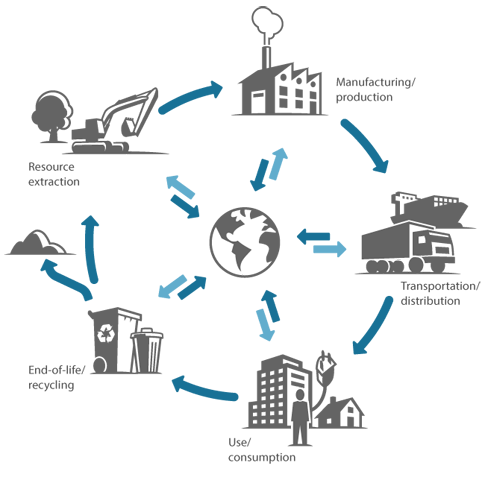
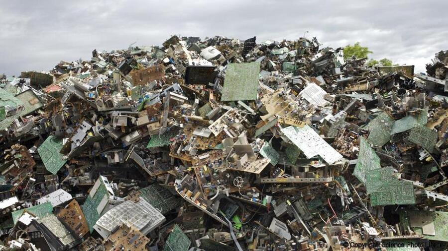

How has digital technology changed society — and what laws govern its use?
Technology does not exist in a vacuum. Every digital system has consequences — for individuals, organisations, and the planet — and those consequences spread across five categories: ethical (what is right), legal (what is permitted), cultural (how societies and behaviours change), environmental (the physical cost of computing), and privacy (how personal data is collected and used). The OCR exam's 8-mark extended-response question most often lands here — and it rewards balanced argument, not one-sided lists.
UK law sets hard limits. The Data Protection Act 2018 governs how personal data must be collected, stored, and used. The Computer Misuse Act 1990 criminalises unauthorised access to computer systems. The Copyright Designs and Patents Act 1988 protects creators from having their work copied without permission. Software licences add a further layer: open-source software makes the source code freely available; proprietary software keeps it locked. Each model has genuine advantages and disadvantages, and the exam asks students to recommend one for a described scenario.


Diagrams: PG Online (Paul Long), OCR J277 textbook. Used under the school site licence.